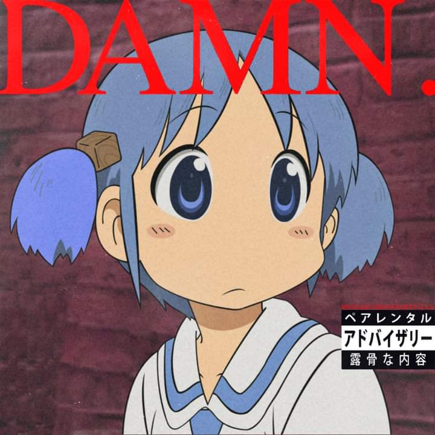

My other Personalities
Creative projects table
A huge table in which I put all the creative piecies of work I made. Unfortunately in szcz language.
Google Spreadsheets
Deloreg youtube channel
A channel in which I make Polish covers of american rap songs. Mainly Kanye West Donda album.
Youtube

Warlight - warzone account
A am a huge warlight warzone enjoyer. Feel free to add me to lotery games, and I will always decline.
Warzone